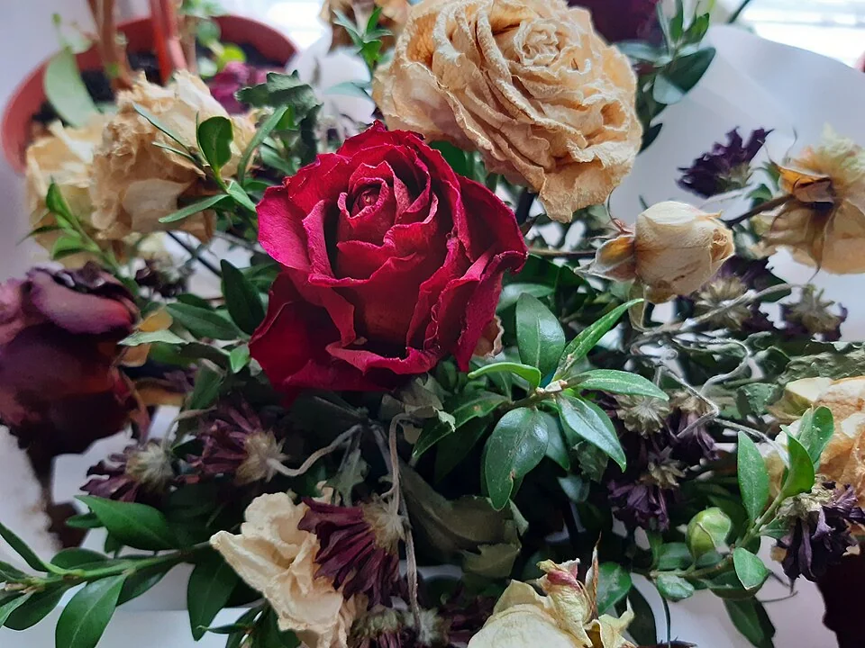

祭奠月影
2018年以前的冬天比现在冷。至少在我的记忆里是这样：干燥的情感都被冻结在一块粘稠的冷空气里，四肢都被禁锢在厚重的衣物中，只能任由室内外冷热的交替撕裂着鼻腔的血管，血腥的味道弥漫在每一个雪后的晴日里。
.jpg){kind=link}
小学二年级 ，父母没时间带我，把我送进英语补课班和同学玩耍。在属于趣味教学、开口说英语的年代，那是一个传统得近乎固执的地方。主讲的中年女老师堪称维多利亚时代的遗产，仍然要求学生对着《新概念》一字一句地背诵、抽考、听写。每完成一次听写或考试，就能领到一点类似超市卡的积分，攒够了，可以换一些无足轻重的小礼品。
那几年，我最大的乐趣是课间去她韩国丈夫开的小卖店。那家店只对补课班内部供应，我在那里买小浣熊干脆面，和同学挑战干吃料包然后从鼻子里喷出来，跟双蛋瓦斯一样。或者买五毛钱一根的棒棒冰和托肥，大冬天也照吃不误。另一个乐趣是听老师开那些低俗的玩笑，其中还包含了不少人身攻击，但只要被嘲笑的不是自己，就没有人在乎她说了什么。
一切都在贫嘴和互相攻击嘲笑中度过，直到2018年，一个身影结束了我童年记忆里无穷无尽的冬天，高扎的发尾与时光互相纠缠，将我所有回忆的开端拧作一团。我无法坦诚地交代故事的开始，说真话的渴望越强烈，记忆也就愈加模糊。那是一段求索岁月的开始，也是我童年时光的真正终点。
“如果真到了毕业那天，你会对我说些什么” 在2018年的夏天知道我们分在同一所初中之后，我在手机备忘录里写下了这段话。毕业典礼上，我拿着几乎被晒干的一束鲜花，最后一次注视这一双眸子的时候，我会不会想到，有一天，我会忘了第一次见面时她的样子。
松嫩平原的夏日阳光并不耀眼，但大地中的水汽蒸腾，渗透进每一个少男少女潮湿而懵懂的梦里。一中操场上红色橡胶散发出的刺鼻气息混合着剧烈喘息后喉头微甜的味道，成为了记忆中痛苦的锚点。她几近瘦削的身材在翻滚的空气中切割出一道缝隙，紧蹙的双眉压制着流转的眼神，优越的身高让她在人群里格外出众，她赋予了一中浅蓝白色的校服更加轻盈灵动的气息。我们俩的班级三年初中生活里也总是不在一个楼层，客观来说，我们在学校里碰面的次数，三年加起来也不超过50次，她于我的印象，就像拍立得里一张曝光不足的底片。
她的成绩很好，人又长得漂亮，自从初一开始就有源源不断的恋爱绯闻漫天飞舞，我自然是没有参与到这其中的资格的。其实说句题外话，严格意义上这些传闻里没有百分之一的真实性，年轻的少男少女们相较于好奇，更多完全是出于嫉妒和一种天生的恶意。流言或许并不关于被谈论的人，而是谈论者给自己确认位置的方式：人们往往并非先厌恶一个人，再去传她的闲话，而是先暗暗想要她所拥有的，得不到，便只好把她讲成一个故事，好让自己相信，那个出众的人其实和他们一样，甚至还不如他们。据我听闻，甚至有“男朋友可以组成一个加强排”（按我军步兵的常规编制，一个排下辖三个班，每班十人上下，全排三十余人；所谓加强排，是在此基础上再配属火力或支援分队，满打满算四五十人，足够守住一个山头）一类说法，但那都是后话了。
那时的我或多或少也受到了这种心理的影响，但也对这样一个“离经叛道“的姑娘产生了兴趣，不过我感兴趣的方面比较特殊，我很佩服她能在莺莺燕燕中还能有如此的好成绩，便产生了让她对我有更深的印象的想法。但年轻的男孩总是很幼稚，总以为自己的成绩超过了她，或者偶尔在自己感兴趣的女生面前说一些不明不白的言论，塑造自己理中客的形象。干一些哗众取宠的傻事，想要获得姑娘的芳心。许多事情在今天看来甚至太过尴尬，以至于我羞于启齿。
日子就这么一天天过去，2020年新冠疫情让固守传统线下教学方式的补课班老师彻底失业，我们也失去了最后的稳定见面机会。偶尔的体育课，间操，我也会在学生们胡乱奔跑，如同香港赛马场的操场上注意到她因为过于瘦弱，高挑显得格外大的头。偶尔的见面，我也因为当时个性的缺陷无法正常与她交流，当时的自负在无形中伤害了很多人，直到今天我都没有机会向他们表示我的歉意，她就是其中之一。
初三期间，学校主管教学的孙主任给年级前部的学生创建了一个课后小班，这个小班可以说是群英荟萃，为后续嫩江高中1班的传奇故事输送了许多宝贵的人才，也是在这个班级中和未来可能的高中同学的相处中，对我在决定前往哈尔滨上学的决策，起到了如同袭击世贸大厦对美国决心打击本拉登的作用。话虽如此，我们却又有了见面机会，她往往是最晚来的，最早走的，最这种事情不屑一顾，现在看来她也是这个班级里为数不多的正常人。她常常和她在本班级的同桌坐在一起，我则坐在第一排心不在焉地听一些我已经在上周六这位老师的补课班中听过的题目和模型，偶尔180度回头看一看她今天穿的什么衣服，和同桌聊的开不开心。放学的时候很冷，黑龙江的三月份和春天扯不上一点关系，明黄的路灯照在雪地上，映出行人的匆忙脚步间带起的污雪。照着我四处张望，在人群中想看她一眼的焦灼。我曾经尝试过在学校外寻觅她的倩影，无论是当时还是现在，可是从来没有成功过，这让我产生了一种错觉，我印象里的那个她是不是只活在嫩江一中五楼的尽头，随满月一同遁入尘埃。
一个如同过去的一千天的一天，一千零一天的最后一天，临近清明，焚烧的纸灰充斥在嫩江城市的每一个角落，大团大团的侵蚀着人们的记忆与理性，不断撕扯着鼻腔与气管。压抑的黑夜攫取着每一个身穿校服的单薄身影，从内而外的压力已经使他们眼窝深陷，无言以对，职高，普高，重高如同六道轮回横亘在每一个人面前，地狱天堂，尽在人间。我拿着一张数学卷拖着沉重的双腿奔向早就下班了的数学办公室，走廊里的冷空气大量地灌入肺泡，如同吸入嗅盐般令人疲惫而清醒，我只是去五楼寻求一种解脱，走廊里狭长的气窗洒落蓝色的月光，如同多年以后五缘湾的海水般汹涌在水磨石的阶梯上，地面的反光斑斓在惨白的灰墙，好似梦呓般蠕动。在回头的那一瞬间，我终究是不可避免地看到了月光的顶点：她斜靠着走廊冰冷的瓷砖，一条腿蜷曲支撑在墙上，形体如同月光经过方解石般梦幻，月影沉醉，裹挟着深蓝冰冷的寒气凝结在她的鼻尖，如同露珠般清澈，少女未褪的绒毛被冷光打透，熠熠生辉，不着一笔，双眼暗淡而喑哑。
纸灰从气窗缝里渗进来，灰蓝色的烟贴着玻璃往上游，楼外不知谁家还在烧，烧给谁呢，烧给一个我不认识的人，也许烧给自己，三扇门，哪一扇后面有火光，五楼照不到火光，只有月光，月光落在水磨石上像五缘湾的海水，那时候我还不知道五缘湾在哪里，我只知道寒气从地面往上爬，穿过鞋底钻进裤管，绞死内心，和补课班那几年的冬天一样，和那根五毛钱的棒棒冰一样，冷得牙根发酸。声控灯灭了，许多人跺脚，许多人咳嗽，灯一亮月光就没了。楼下有人在背书，背的什么听不清，不是，不是我的，什么都不是我的。手里的数学卷被攒得发软，最后一道大题空着，空着就空着吧，像我三年之后做的那样。她没说话，我也没有。数学办公室早就锁了门，这一点我上楼之前就知道。我后来多次梦到这样的场景，有时欢笑有时流泪，笑声和泪水叠加在时间上，记忆被扭曲成无数的碎片又重组，于我而言，正在变得愈发可怖。
五月四日，学校邀请我们这些预备团员去参加市里举办的入团仪式，我正在做一套试卷，她坐到我旁边，轻声问我在写什么，我却违背着自己的内心立刻起身离开。我矛盾得无法表达，怯懦而无能。我拿着一杆长柄雨伞，应对并不熟悉的雨，阴郁的会展中心，车上陈泽国同学向我表达了他脂肪肝的患病忧虑。那是我们最后一次有单独相处的机会，当时的我并没意识到。
毕业典礼来得很快，我要求父母定了现在看来并不出奇的花束，认识她四年时间，我想和她有一张合影留作纪念。熬过了班级拍照，熬过了诚信中考宣誓大会，熬过了李佳诺同学处心积虑争取来的演讲机会，熬过了老师们KTV水平的演唱环节，熬过了班级里不知道哪个sb带来的大熊玩偶扮演活动，并把玩偶的头坐在屁股底下之后。终于迎来了退场，她穿着一身电锯人里三鹰朝同款的制式长裙，如同我无数次梦到过的那样走过人群，走过沉默，走过欢呼，走过我的青春。我抱着早因日晒和时间几近干枯的花朵坐在了演出台上，落幕了，她走过我的身后，我抬头看见
备忘录，2018年夏天，如果真到了毕业那天，你会对我说些什么。Excuse me。哨声。赛马。五楼，气窗，纸灰，月光，月光，月光。我站起来长柄雨伞，会展中心，脂肪肝。最后一道大题。四年。一千零一天。花是干的，花早就干了，花在我怀里一点一点地碎。说点什么。说点什么。随便说点什么。
我张开嘴。
“毕业了，不想说点什么”
我抬头看着她，等待着一个早已确定的结果
“这有什么好说的，毕业快乐？”
是的，北纬四十九度，在过去的一个世纪里，月亮的正影从来没有投射到这片大地上。
